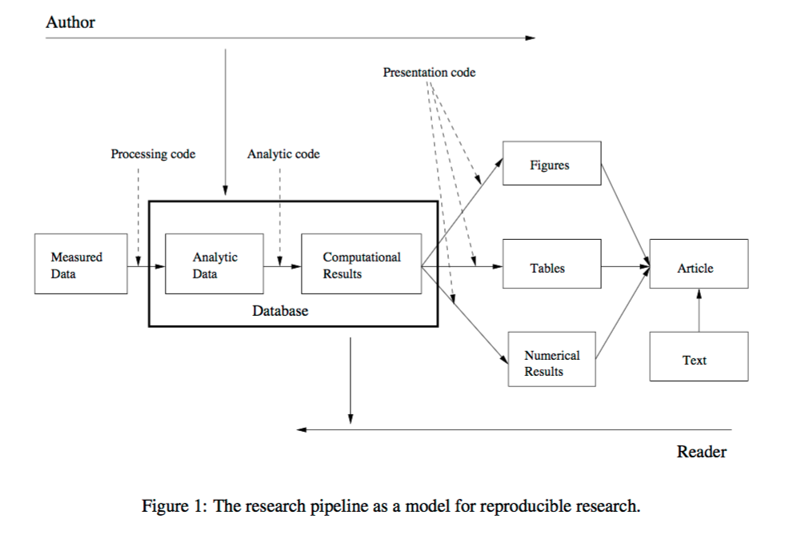

Week 1 - Introductions, Reproducible Research, (a little) R, and (a little) Git
August 18, 2021
Robert Settlage
Last updated: 2021-09-15
Checks: 7 0
Knit directory: STAT5014_Fall2021_website/
This reproducible R Markdown analysis was created with workflowr (version 1.6.2). The Checks tab describes the reproducibility checks that were applied when the results were created. The Past versions tab lists the development history.
Great! Since the R Markdown file has been committed to the Git repository, you know the exact version of the code that produced these results.
Great job! The global environment was empty. Objects defined in the global environment can affect the analysis in your R Markdown file in unknown ways. For reproduciblity it’s best to always run the code in an empty environment.
The command set.seed(20210816) was run prior to running the code in the R Markdown file. Setting a seed ensures that any results that rely on randomness, e.g. subsampling or permutations, are reproducible.
Great job! Recording the operating system, R version, and package versions is critical for reproducibility.
Nice! There were no cached chunks for this analysis, so you can be confident that you successfully produced the results during this run.
Great job! Using relative paths to the files within your workflowr project makes it easier to run your code on other machines.
Great! You are using Git for version control. Tracking code development and connecting the code version to the results is critical for reproducibility.
The results in this page were generated with repository version 64f262d. See the Past versions tab to see a history of the changes made to the R Markdown and HTML files.
Note that you need to be careful to ensure that all relevant files for the analysis have been committed to Git prior to generating the results (you can use wflow_publish or wflow_git_commit). workflowr only checks the R Markdown file, but you know if there are other scripts or data files that it depends on. Below is the status of the Git repository when the results were generated:
Ignored files:
Ignored: .DS_Store
Ignored: .Rhistory
Ignored: .Rproj.user/
Unstaged changes:
Modified: analysis/_site.yml
Note that any generated files, e.g. HTML, png, CSS, etc., are not included in this status report because it is ok for generated content to have uncommitted changes.
These are the previous versions of the repository in which changes were made to the R Markdown (analysis/Week_1_Introductions_Reproducible_Research_R.Rmd) and HTML (docs/Week_1_Introductions_Reproducible_Research_R.html) files. If you’ve configured a remote Git repository (see ?wflow_git_remote), click on the hyperlinks in the table below to view the files as they were in that past version.
| File | Version | Author | Date | Message |
|---|---|---|---|---|
| html | 356388f | rsettlag | 2021-09-15 | Build site. |
| html | 6f1f6d9 | rsettlag | 2021-09-14 | Build site. |
| html | 2b219b3 | rsettlag | 2021-09-08 | Build site. |
| html | ecc7b6a | rsettlag | 2021-09-08 | Build site. |
| html | 201099d | rsettlag | 2021-09-08 | Build site. |
| html | 46f2b64 | rsettlag | 2021-09-08 | Build site. |
| html | 7f1b149 | rsettlag | 2021-09-08 | Build site. |
| html | 247d307 | rsettlag | 2021-09-08 | Build site. |
| html | 289666d | rsettlag | 2021-09-08 | Build site. |
| html | a51ebbe | rsettlag | 2021-08-24 | Build site. |
| html | 2a7bb8d | rsettlag | 2021-08-22 | Build site. |
| Rmd | 53bd368 | rsettlag | 2021-08-22 | wflow_publish(republish = TRUE, all = TRUE, update = TRUE) |
| html | 58455a9 | rsettlag | 2021-08-22 | Build site. |
| Rmd | 2f56b88 | rsettlag | 2021-08-22 | wflow_publish(republish = TRUE, all = TRUE, update = TRUE) |
| html | f4b3c68 | rsettlag | 2021-08-22 | Build site. |
| Rmd | 6f17735 | rsettlag | 2021-08-22 | wflow_publish(republish = TRUE, all = TRUE, update = TRUE) |
| html | 6f17735 | rsettlag | 2021-08-22 | wflow_publish(republish = TRUE, all = TRUE, update = TRUE) |
| html | d85833e | rsettlag | 2021-08-19 | Build site. |
| html | 95324a8 | rsettlag | 2021-08-19 | Build site. |
| html | 77b47af | rsettlag | 2021-08-19 | wflow_publish(update = TRUE, republish = TRUE, all = TRUE) |
| html | 9b85ce8 | rsettlag | 2021-08-19 | Build site. |
| html | ee5b69a | rsettlag | 2021-08-19 | Build site. |
| Rmd | e862b04 | rsettlag | 2021-08-19 | added Week 1 |
| html | 6579af6 | rsettlag | 2021-08-19 | Build site. |
Today’s Agenda
- Introduce the course
- Introduce the concepts of Reproducible Research
- Introduce Git
- Introduce R as the (main) platform for the course
- Homework 1
Course Learning Objectives
- R programming
- Reproducible research concepts
- Good programming practices
- Data cleaning, munging amd plotting
- Git fundamentals
- Markdown
- Python basics
- SAS basics
Tentative Course Lecture Schedule
Due dates are solid, however, feel free to race ahead.
https://rsettlage.github.io/STAT5104_Fall2021/schedule.html
Passing the course
Q. How do you pass the course??
A. Do the homework AND participate.
There will be ca. 5 homeworks, you need to pass 4. There will also be a group project which must receive a passing mark. Each homework will be given 10 points, 7 is passing. Point breakdown will be:
- 2 pts for submitting
- 2 pts for clean, well written document
- 2 pts for complete description of analysis process
- 4 pts for completing the assigned tasks.
Requirements for class environment
- During lecture:
- Do not play on internet during lecture.
- Coding with me:
- Please code along to inform yourself of questions.
- In-class exercise:
- Do-it-yourself and ask questions
Class motivation
Regression and ANOVA
UGLY code SUCKS
You have worked 6 months to analyze a data set. You give your collaborator the perfect analysis and the results are very exciting. They go away very happy and you don’t hear from them for 1 year. Suddenly, a flurry of emails ensues, they have new data to add to the previous pipeline, they need alterations to your perfect figure, they have lots of how did you questions, they ask you to write a methods section, etc etc. You publish your perfect results. Someone else analyzes the data and comes to different conclusions. Are you sure you didn’t have a bug in your code? How good are your notes???
Reproducible Research - Concepts
Guide to this topic here: http://ropensci.github.io/reproducibility-guide/
In general, we should weave code and text into a complete reference of our work. The document should:
- download or otherwise load/generate data
- reproduce steps to munge data
- recreate analysis steps
- create figures and tables
- explain any and all steps along the way
- end with conclusions drawn
- optionally add suggestions for future experiments
While the above works well as a record of our analysis steps, we are still missing a method to save, update our work, and do more interesting things like collaborate.
Version Control
What is version control - a system for storing data and tracking changes. There are lots of different flavors:
- Git, SVG, Mercural, Perforce, Bazaar, etc etc
In this class, we will use GitHub and make everything public, i.e. free.
One question you are probably asking: “I am just using R for my own assignments, on my own computer, by myself, why should I care about version control?” Two stack overflow threads should help answer this:
- Why should I use version control?
http://stackoverflow.com/questions/1408450/why-should-i-use-version-control - R and version control for the solo data analyst
http://stackoverflow.com/questions/2712421/r-and-version-control-for-the-solo-data-analyst
Version Control and Git
Git is essentially a database of snapshots of the project directory tree. You decide when and what to take snapshots of and if you using GitHub (or similar) when to push a copy to a remote repository.
The basic workflow is:
- git pull
- do work
- git pull to make sure you have latest files
- git add <your changed file> tells git what change you care about
- git commit -m “some INFORMATIVE message about the changes”
- git push to the repository (local or remote)
- repeat
More instructions in the homework.
Git file states
- Untracked - files that have not been added to the database
- Committed - data is safely stored in your local database
- Modified - file is changed but not committed it to your database yet
- Staged - a modified file in its current version will go in next commit snapshot

Git file lifecycle
Git workflow
Nice visual from Git-flow https://jeffkreeftmeijer.com/git-flow/

| Version | Author | Date |
|---|---|---|
| 6579af6 | rsettlag | 2021-08-19 |
Reproducible Research Analysis
From Hadley Wickham & Garrett Grolemund’s R for Data Science http://r4ds.had.co.nz

Reproducible Research Pipeline
Further illustrated by Peng and Eckel (2008)

| Version | Author | Date |
|---|---|---|
| 6579af6 | rsettlag | 2021-08-19 |
R and Rstudio
From http://r-project.org
R is an integrated suite of software facilities for data manipulation, calculation and graphical display.
Rstudio is a GUI for R. http://rstudio.com
Reasons to use R:
- free
- open source
- large community of both users and developers
- large number of extensions to facilitate common tasks (packages)
- superb functionality for data processing
- very mature statistical and graphical capabilities
R packages
R packages are community written (and often tested) extensions to R to enhance the functionality of R.
Examples:
- MASS
- mvrnorm
- stepAIC
- mvrnorm
- ggplot2
- grammer of graphics
- grammer of graphics
- knitr
- RMarkdown
Rmarkdown
RMarkdown: “Analyze. Share. Reproduce.”
Seems like what we are looking for.
A Markdown-formatted document should be publishable as-is, as plain text, without looking like it’s been marked up with tags or formatting instructions. John Gruber
Rstudio includes an “extended and slightly revised version” of Gruber’s original Markdown syntax. This includes codes for:
- adding lists
- numbered, bullets, etc
- numbered, bullets, etc
- text formatting
- bold, italics, highlight, etc
- bold, italics, highlight, etc
- adding equations
- full LaTeX styled equations
- numbering, indenting, aligning, etc
- full LaTeX styled equations
LaTeX
http://latex-project.org
LaTeX is a high-quality typesetting system; it includes features designed for the production of technical and scientific documentation. LaTeX is the de facto standard for the communication and publication of scientific documents. LaTeX is available as free software.
Which includes many many math symbols:
http://web.ift.uib.no/Teori/KURS/WRK/TeX/symALL.html
And has a cool online tool:
http://detexify.kirelabs.org/classify.html
Reproducible Research | Coding
Combining LaTeX and Knitr, we have a system to weave text and code into a highly customizable and formatted analysis report.
Quick tour of Rstudio and R from ARC
- panels
- interactive, code, files, help
- packages
- CRAN, installing, loading
- RMarkdown
- General R
- basic math, assignment operator
- basic math, assignment operator
- Basic plots
Closing
In-class exercise
Homework 1
sessionInfo()R version 4.0.3 Patched (2020-11-08 r79409)
Platform: x86_64-apple-darwin17.0 (64-bit)
Running under: macOS Catalina 10.15.7
Matrix products: default
BLAS: /Library/Frameworks/R.framework/Versions/4.0/Resources/lib/libRblas.dylib
LAPACK: /Library/Frameworks/R.framework/Versions/4.0/Resources/lib/libRlapack.dylib
locale:
[1] en_US.UTF-8/en_US.UTF-8/en_US.UTF-8/C/en_US.UTF-8/en_US.UTF-8
attached base packages:
[1] stats graphics grDevices utils datasets methods base
other attached packages:
[1] workflowr_1.6.2
loaded via a namespace (and not attached):
[1] Rcpp_1.0.7 whisker_0.4 knitr_1.33 magrittr_2.0.1
[5] R6_2.5.0 rlang_0.4.11 fansi_0.5.0 highr_0.9
[9] stringr_1.4.0 tools_4.0.3 xfun_0.24 utf8_1.2.2
[13] git2r_0.28.0 htmltools_0.5.1.1 ellipsis_0.3.2 rprojroot_2.0.2
[17] yaml_2.2.1 digest_0.6.27 tibble_3.1.3 lifecycle_1.0.0
[21] crayon_1.4.1 later_1.2.0 vctrs_0.3.8 promises_1.2.0.1
[25] fs_1.5.0 glue_1.4.2 evaluate_0.14 rmarkdown_2.9
[29] stringi_1.7.3 compiler_4.0.3 pillar_1.6.2 httpuv_1.6.1
[33] pkgconfig_2.0.3